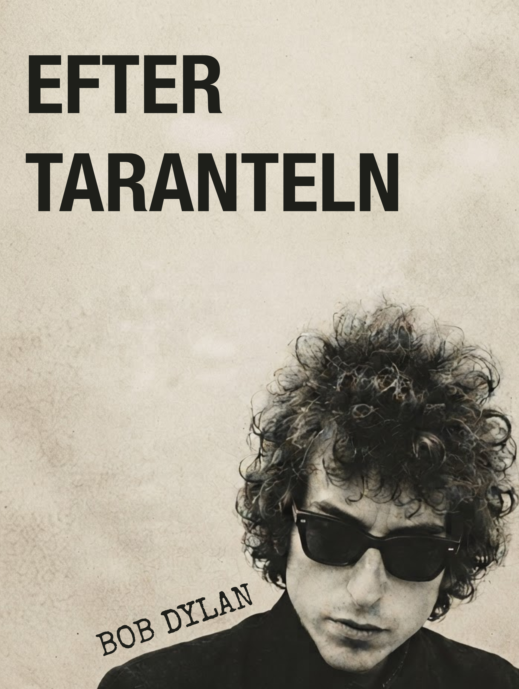

Om boken
Med Tarantulagav sig Bob Dylan in i det experimentella prosaverket - en kaotisk och drömlik värld där gränsen mellan prosa, poesi, visuella uttryck och sångens språk suddas ut.
Det här är den försvunna andra volymen. Här samlas prosafragment, lyrik, anteckningar, fotografier, målningar och andra texter som Dylan skrev efter Tarantula, med avsikten att de en dag skulle bli en fortsättning på verket. Men volymen blev aldrig färdigställd eller publicerad - materialet försvann, glömdes bort och återfinns här för första gången, samlat och översatt till svenska.
Ett unikt fragmentariskt dokument från en av 1900-talets mest mångkreativa konstnärer.